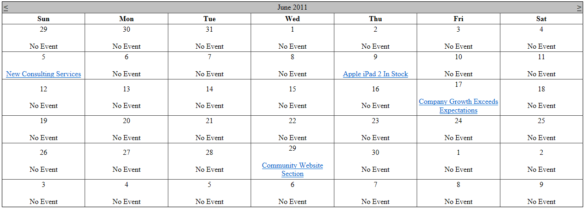

BasicCalendar
The BasicCalendar control displays a calendar with events, news and other date-based pages specified by a data source. Provides advanced formatting capabilities and allows you to display additional information for individual days.
You can use the BasicCalendar with any bindable data source – not only Kentico data and objects.
Derived from: ASP.NET Calendar
Tip: If you want to display pages from Kentico in a calendar, you can use the CMSCalendar control, which has built-in support for loading Kentico pages.
Getting started
The following is a step-by-step tutorial that shows how to use the BasicCalendar control to display a calendar with links to news items (CMS.News pages) on days when news items were released:
Create a new Web form somewhere in your web project.
Drag the BasicCalendar control from the toolbox onto the form.
Add the following code marked by the BasicCalendar templates comments between the <cms:BasicCalendar> tags. The overall code of the BasicCalendar control should look like this:
<cms:BasicCalendar ID="BasicCalendar1"runat="server"><%-- BasicCalendar templates -------------------------------------------------------- --%><ItemTemplate><br/><a href='<%# ResolveUrl(CMS.DocumentEngine.DocumentURLProvider.GetUrl(Convert.ToString(Eval("NodeAliasPath")), Convert.ToString(Eval("DocumentUrlPath")))) %>'><%# Eval("NewsTitle") %></a></ItemTemplate><NoEventsTemplate><br>No Event</NoEventsTemplate><%-- BasicCalendar templates -------------------------------------------------------- --%></cms:BasicCalendar>This sets the template that specify the layout of days with and without news releases. For days with news releases, the control dynamically loads the values of the news pages from the data source.
Switch to the web form's code behind and add the following references:
usingCMS.DocumentEngine;Add the following code to the Page_Load method:
// Retrieves all news items from the Kentico database, and assigns them as the data source of the BasicCalendar controlBasicCalendar1.DataSource = DocumentHelper.GetDocuments("CMS.News").Path("/", PathTypeEnum.Children).OrderBy("NewsReleaseDate").TypedResult;// Tells the control from which data field to load the date/time valuesBasicCalendar1.DayField ="NewsReleaseDate";BasicCalendar1.SelectedDate = DateTime.Now;BasicCalendar1.DataBind();Save the changes to the web form and its code behind file.
Right-click the web form in the Solution explorer and select View in Browser.
The resulting page displays a calendar.

Configuration
You can set the following properties for the BasicCalendar control:
|
Property name |
Description |
Sample value |
|
CustomTimeZone |
Assigns a custom time zone to the control as a TimeZoneInfo object. |
|
|
DataMember |
Name of the table when a DataSet is used as the DataSource. |
|
|
DataSource |
Data source with calendar events - either a DataSet or DataTable object. |
|
|
DayField |
Name of the field in the data source that contains the date/time value. |
"NewsReleaseDate" |
|
DayWithEventsStyle |
Style of days that have an event. |
|
|
DisplayOnlySingleDayItem |
Indicates whether only one item is displayed per day. |
|
|
HideDefaultDayNumber |
Indicates whether the control displays the day numbers. If true, the used template fully fills the day cells. |
|
|
RelatedData |
Custom data connected to the object. |
|
|
TimeZone |
Specifies the time zone type. |
"Custom" |
Note: The BasicCalendar inherits from the ASP.NET Calendar control, so you can also set any of the base properties.
Appearance and styling
You can modify the appearance of the BasicCalendar control by setting the standard properties inherited from the ASP.NET Calendar control.
A common way to set the appearance of Calendar controls is to assign a skin through the SkinID property. You can define skins in .skin files under individual themes in the App_Themes folder. See the .NET Skins and Themes documentation for more information.
The design of day cells is determined by the code of the templates defined within the tags of the BasicCalendar control. The following templates are available:
|
Template name |
Description |
|
ItemTemplate |
Template for displaying days with events. |
|
NoEventsTemplate |
Template for displaying days without any events. |